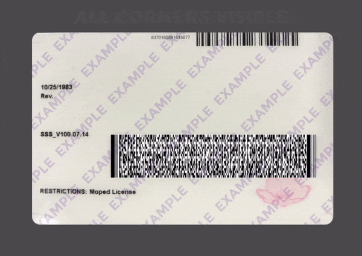
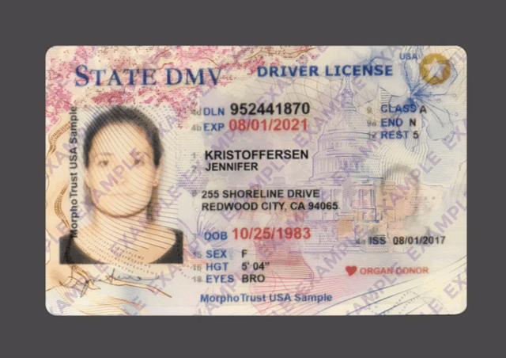

サポートされていないブラウザを使用しているようです。
より良い体験のために以下のブラウザのいずれかを使用してください
Google Chrome Version 66+
Mozilla Firefox Version 52+
Apple Safari Version 11.2+
Opera Version 55+
Microsoft Edge Version 17+
ネットワーク信号の確認

弱いネットワーク信号
このプロセスは、少なくとも接続速度が高い場合にのみ機能します
このプロセスは、少なくともアップロード接続速度が高い場合にのみ機能します
.
ネットワーク信号が弱すぎるようです。
ネットワーク信号の確認

良好なネットワーク信号
このプロセスは、少なくとも接続速度が高い場合にのみ機能します
.
したがって、良好な接続を維持するようにしてください。
 あなたの情報は安全です.
あなたの情報は安全です.

2
3
まず、あなたの写真が入っているIDを取得します。
これは、運転免許証、州のIDカード、仮免許証、またはパスポートの場合があります。
IDはどこの国からですか？
- 頻繁に検索される国
どのような種類の ドキュメントですか？
ドキュメントをスキャンします。
IDがフレームの中央に配置されていることを確認してください。デバイスのカメラが汚れている場合は、掃除してください。
ドキュメントから情報を抽出しました。
何かが間違っている場合は、ドキュメントの写真を撮り直してください。
ファーストネーム
マイケル
苗字
ダニエル
DOB
1975年7月3日
住所
62コットンウッドロード、エニータウン、マサチューセッツ州
ドキュメントをキャプチャするのにいくつかの問題がありました。すべてのコーナーが表示されていることを確認してください。
写真の例

あなたの背中をスキャンします .
IDがフレームの中央に配置されていることを確認してください
そしてそれ はっきりと見える。
デバイスのカメラが汚れている場合は、掃除してください。
デバイスのカメラが汚れている場合は、掃除してください。
から情報を抽出しました
インクルード オン
君の .
何か間違っている場合は、IDの裏側の写真を撮り直してください。
ドキュメントをキャプチャするのにいくつかの問題がありました。以下の例のように、すべてのコーナーが表示されていることを確認してください
Example photo
Place your in the palm of your hand.
Make sure you’re in a well-lit space and that there’s no glare on the ID.
あなたの正面をスキャンします .
IDがフレームの中央に配置されていることを確認してください
そしてそれ はっきりと見える。
デバイスのカメラが汚れている場合は、掃除してください。
デバイスのカメラが汚れている場合は、掃除してください。
私たちはあなたの正面から情報を抽出しました .
何か間違っている場合は、IDの写真を撮り直してください。
ドキュメントをキャプチャするのにいくつかの問題がありました。以下の例のように、すべてのコーナーが表示されていることを確認してください
写真の例

パスポートの内側のページをスキャンします。
片手でパスポートを持っている間、下部の情報とあなたの写真がはっきりと見えることを確認してください。スマートフォンのカメラが汚れている場合は、掃除してください。
パスポートの内側のページから情報を抽出しました。
何かが間違っている場合は、ドキュメントを再スキャンしてください。
ドキュメントをキャプチャするのにいくつかの問題がありました。以下の例のように、すべてのコーナーが表示されていることを確認してください
写真の例


ドキュメントを認証するには、携帯電話のカメラにアクセスする必要があります。いいね？

認証中…
提出されたドキュメントの確認
 申し訳ありませんが、問題が発生しました。
申し訳ありませんが、問題が発生しました。
申し訳ありませんが、問題が発生しました。
申し訳ありませんが、問題が発生しました。